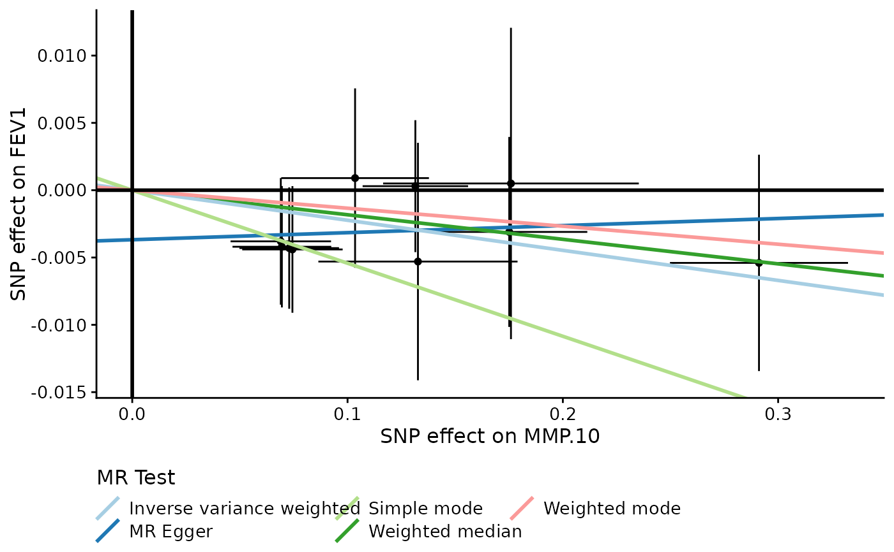
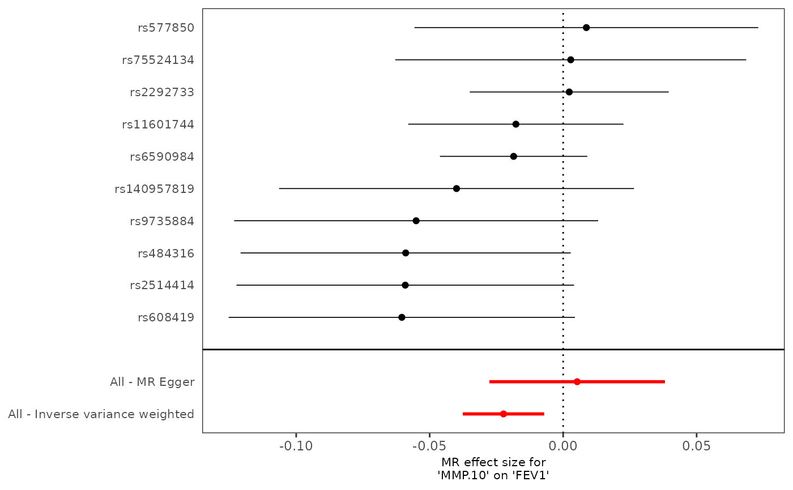
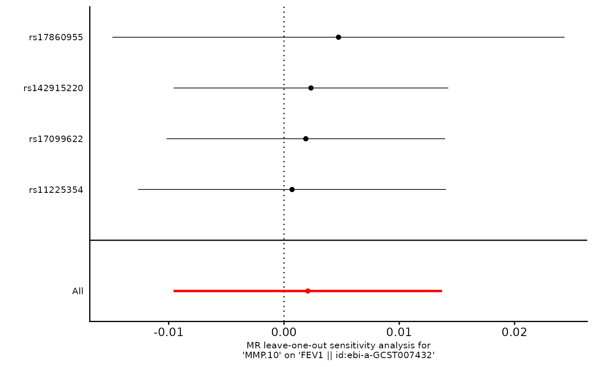

Given harmonised data, this function conducts a two-sample MR analysis.
Arguments
- TwoSampleMRinput
Harmonised data.
- mr_plot
one of "None", "TwoSampleMR", "pQTLtools" for no, the original and the revised plots, respectively.
- prefix
a prefix for output files.
Details
As TwoSampleMR faces seemingly perplexing options, this function intends to simplify various steps in a two-sample MR as in Dimou and Tsilidis (2018) . It is particularly useful when a large numbher of MRs are necessary, e.g., multiple proteins and their cis/trans regions need to be examined, in which case prefix could direct the output to various directories.
Check your authentication token if the example below fails to run.
References
Dimou NL, Tsilidis KK (2018). “A Primer in Mendelian Randomization Methodology with a Focus on Utilizing Published Summary Association Data.” In Evangelou E (ed.), Genetic Epidemiology: Methods and Protocols, chapter 13, 211--230. Springer New York, New York, NY. ISBN 978-1-4939-7868-7, doi:10.1007/978-1-4939-7868-7_13 .
Examples
suppressMessages(require(dplyr))
prot <- "MMP.10"
type <- "cis"
f <- paste0(prot,"-",type,".mrx")
d <- read.table(file.path(find.package("pQTLtools",lib.loc=.libPaths()),"tests",f),
header=TRUE)
exposure <- TwoSampleMR::format_data(within(d,{P=10^logP}), phenotype_col="prot", snp_col="rsid",
chr_col="Chromosome", pos_col="Posistion",
effect_allele_col="Allele1", other_allele_col="Allele2",
eaf_col="Freq1", beta_col="Effect", se_col="StdErr",
pval_col="P", log_pval=FALSE,
samplesize_col="N")
clump <- exposure[sample(1:nrow(exposure),nrow(exposure)/80),] # TwoSampleMR::clump_data(exposure)
outcome <- TwoSampleMR::extract_outcome_data(snps=exposure$SNP,outcomes="ebi-a-GCST007432")
#> Extracting data for 1106 SNP(s) from 1 GWAS(s)
#> Finding proxies for 155 SNPs in outcome ebi-a-GCST007432
#> Extracting data for 155 SNP(s) from 1 GWAS(s)
harmonise <- TwoSampleMR::harmonise_data(clump,outcome)
#> Harmonising MMP.10 (er44c0) and FEV1 || id:ebi-a-GCST007432 (ebi-a-GCST007432)
prefix <- paste(prot,type,sep="-")
pQTLtools::run_TwoSampleMR(harmonise, mr_plot="pQTLtools", prefix=prefix)
#> Analysing 'er44c0' on 'ebi-a-GCST007432'

#> Warning: Removed 1 row containing missing values or values outside the scale range
#> (`geom_errorbarh()`).
#> Warning: Removed 1 row containing missing values or values outside the scale range
#> (`geom_point()`).

#> Warning: Removed 1 row containing missing values or values outside the scale range
#> (`geom_errorbarh()`).
#> Warning: Removed 1 row containing missing values or values outside the scale range
#> (`geom_point()`).

caption <- "Table. MMP.10 variants and FEV1"
knitr::kable(read.delim(paste0(prefix,"-result.txt"),header=TRUE),
caption=paste(caption, "(result)"))
#>
#>
#> Table: Table. MMP.10 variants and FEV1 (result)
#>
#> |id.exposure |id.outcome |outcome |exposure |method | nsnp| b| se| pval|
#> |:-----------|:----------------|:-------------------------------------|:--------|:-------------------------|----:|--------:|-------:|------:|
#> |er44c0 |ebi-a-GCST007432 |FEV1 || id:ebi-a-GCST007432 |MMP.10 |MR Egger | 11| 0.01306| 0.01738| 0.4715|
#> |er44c0 |ebi-a-GCST007432 |FEV1 || id:ebi-a-GCST007432 |MMP.10 |Weighted median | 11| -0.01787| 0.01040| 0.0858|
#> |er44c0 |ebi-a-GCST007432 |FEV1 || id:ebi-a-GCST007432 |MMP.10 |Inverse variance weighted | 11| -0.01508| 0.00832| 0.0699|
#> |er44c0 |ebi-a-GCST007432 |FEV1 || id:ebi-a-GCST007432 |MMP.10 |Simple mode | 11| -0.05333| 0.02012| 0.0243|
#> |er44c0 |ebi-a-GCST007432 |FEV1 || id:ebi-a-GCST007432 |MMP.10 |Weighted mode | 11| -0.00996| 0.01345| 0.4761|
knitr::kable(read.delim(paste0(prefix,"-heterogeneity.txt"),header=TRUE),
caption=paste(caption,"(heterogeneity)"))
#>
#>
#> Table: Table. MMP.10 variants and FEV1 (heterogeneity)
#>
#> |id.exposure |id.outcome |outcome |exposure |method | Q| Q_df| Q_pval|
#> |:-----------|:----------------|:-------------------------------------|:--------|:-------------------------|----:|----:|------:|
#> |er44c0 |ebi-a-GCST007432 |FEV1 || id:ebi-a-GCST007432 |MMP.10 |MR Egger | 10.1| 9| 0.343|
#> |er44c0 |ebi-a-GCST007432 |FEV1 || id:ebi-a-GCST007432 |MMP.10 |Inverse variance weighted | 13.7| 10| 0.187|
knitr::kable(read.delim(paste0(prefix,"-pleiotropy.txt"),header=TRUE),
caption=paste(caption,"(pleiotropy)"))
#>
#>
#> Table: Table. MMP.10 variants and FEV1 (pleiotropy)
#>
#> |id.exposure |id.outcome |outcome |exposure | egger_intercept| se| pval|
#> |:-----------|:----------------|:-------------------------------------|:--------|---------------:|------:|-----:|
#> |er44c0 |ebi-a-GCST007432 |FEV1 || id:ebi-a-GCST007432 |MMP.10 | -0.00377| 0.0021| 0.106|
knitr::kable(read.delim(paste0(prefix,"-single.txt"),header=TRUE),
caption=paste(caption,"(single)"))
#>
#>
#> Table: Table. MMP.10 variants and FEV1 (single)
#>
#> |exposure |outcome |id.exposure |id.outcome | samplesize|SNP | b| se| p|
#> |:--------|:-------------------------------------|:-----------|:----------------|----------:|:-------------------------------|--------:|-------:|------:|
#> |MMP.10 |FEV1 || id:ebi-a-GCST007432 |er44c0 |ebi-a-GCST007432 | 321047|rs11601744 | -0.01770| 0.02056| 0.3892|
#> |MMP.10 |FEV1 || id:ebi-a-GCST007432 |er44c0 |ebi-a-GCST007432 | 321047|rs140957819 | -0.03994| 0.03391| 0.2389|
#> |MMP.10 |FEV1 || id:ebi-a-GCST007432 |er44c0 |ebi-a-GCST007432 | 321047|rs2292733 | 0.00228| 0.01901| 0.9045|
#> |MMP.10 |FEV1 || id:ebi-a-GCST007432 |er44c0 |ebi-a-GCST007432 | 321047|rs2514414 | -0.05914| 0.03226| 0.0668|
#> |MMP.10 |FEV1 || id:ebi-a-GCST007432 |er44c0 |ebi-a-GCST007432 | 321047|rs34246704 | 0.02193| 0.01754| 0.2113|
#> |MMP.10 |FEV1 || id:ebi-a-GCST007432 |er44c0 |ebi-a-GCST007432 | 321047|rs484316 | -0.05898| 0.03155| 0.0615|
#> |MMP.10 |FEV1 || id:ebi-a-GCST007432 |er44c0 |ebi-a-GCST007432 | 321047|rs577850 | 0.00870| 0.03285| 0.7912|
#> |MMP.10 |FEV1 || id:ebi-a-GCST007432 |er44c0 |ebi-a-GCST007432 | 321047|rs608419 | -0.06043| 0.03309| 0.0678|
#> |MMP.10 |FEV1 || id:ebi-a-GCST007432 |er44c0 |ebi-a-GCST007432 | 321047|rs6590984 | -0.01855| 0.01408| 0.1878|
#> |MMP.10 |FEV1 || id:ebi-a-GCST007432 |er44c0 |ebi-a-GCST007432 | 321047|rs75524134 | 0.00284| 0.03354| 0.9325|
#> |MMP.10 |FEV1 || id:ebi-a-GCST007432 |er44c0 |ebi-a-GCST007432 | 321047|rs9735884 | -0.05507| 0.03478| 0.1133|
#> |MMP.10 |FEV1 || id:ebi-a-GCST007432 |er44c0 |ebi-a-GCST007432 | 321047|All - Inverse variance weighted | -0.01508| 0.00832| 0.0699|
#> |MMP.10 |FEV1 || id:ebi-a-GCST007432 |er44c0 |ebi-a-GCST007432 | 321047|All - MR Egger | 0.01306| 0.01738| 0.4715|
knitr::kable(read.delim(paste0(prefix,"-loo.txt"),header=TRUE),
caption=paste(caption,"(loo)"))
#>
#>
#> Table: Table. MMP.10 variants and FEV1 (loo)
#>
#> |exposure |outcome |id.exposure |id.outcome | samplesize|SNP | b| se| p|
#> |:--------|:-------------------------------------|:-----------|:----------------|----------:|:-----------|-------:|-------:|-------:|
#> |MMP.10 |FEV1 || id:ebi-a-GCST007432 |er44c0 |ebi-a-GCST007432 | 321047|rs11601744 | -0.0147| 0.00934| 0.11484|
#> |MMP.10 |FEV1 || id:ebi-a-GCST007432 |er44c0 |ebi-a-GCST007432 | 321047|rs140957819 | -0.0139| 0.00878| 0.11247|
#> |MMP.10 |FEV1 || id:ebi-a-GCST007432 |er44c0 |ebi-a-GCST007432 | 321047|rs2292733 | -0.0179| 0.00911| 0.04954|
#> |MMP.10 |FEV1 || id:ebi-a-GCST007432 |er44c0 |ebi-a-GCST007432 | 321047|rs2514414 | -0.0128| 0.00832| 0.12303|
#> |MMP.10 |FEV1 || id:ebi-a-GCST007432 |er44c0 |ebi-a-GCST007432 | 321047|rs34246704 | -0.0223| 0.00777| 0.00404|
#> |MMP.10 |FEV1 || id:ebi-a-GCST007432 |er44c0 |ebi-a-GCST007432 | 321047|rs484316 | -0.0127| 0.00830| 0.12510|
#> |MMP.10 |FEV1 || id:ebi-a-GCST007432 |er44c0 |ebi-a-GCST007432 | 321047|rs577850 | -0.0162| 0.00880| 0.06484|
#> |MMP.10 |FEV1 || id:ebi-a-GCST007432 |er44c0 |ebi-a-GCST007432 | 321047|rs608419 | -0.0129| 0.00831| 0.12083|
#> |MMP.10 |FEV1 || id:ebi-a-GCST007432 |er44c0 |ebi-a-GCST007432 | 321047|rs6590984 | -0.0139| 0.01012| 0.16994|
#> |MMP.10 |FEV1 || id:ebi-a-GCST007432 |er44c0 |ebi-a-GCST007432 | 321047|rs75524134 | -0.0159| 0.00887| 0.07278|
#> |MMP.10 |FEV1 || id:ebi-a-GCST007432 |er44c0 |ebi-a-GCST007432 | 321047|rs9735884 | -0.0133| 0.00849| 0.11636|
#> |MMP.10 |FEV1 || id:ebi-a-GCST007432 |er44c0 |ebi-a-GCST007432 | 321047|All | -0.0151| 0.00832| 0.06987|
for (x in c("result","heterogeneity","pleiotropy","single","loo"))
unlink(paste0(prefix,"-",x,".txt"))